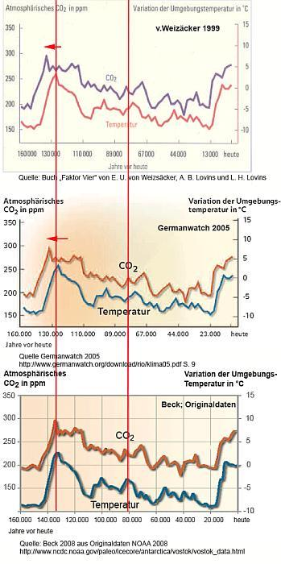

Weitere Datenübertragung Ihres Webseitenbesuchs an Google durch ein Opt-Out-Cookie stoppen - Klick!
Stop transferring your visit data to Google by a Opt-Out-Cookie - click!: Stop Google AnalyticsCookie Info.Datenschutzerklärung
Eine Belegarbeit am Geschwister-Scholl-Gymnasium Löbau im Schuljahr 2004/2005 über den großen Klimaschwindel, von der Autorin
dankenswerterweise den Altbau und Denkmalpflege Informationen zur Veröffentlichung freigegeben.
Belegarbeit: Klimawandel und Klimaschwindel
erarbeitet von: Maria Ackermann
Unterrichtsfach: Geographie
Betreuer: Herr Rabel
Ó Maria Ackermann, Jg. 1987
Lehdehäuser 1b
02708 Lawalde-Lauba
1.1. Die Erforschung des Klimas der Vergangenheit
1.2. Die frühe Klimageschichte
1.3. Das Quartäre Eiszeitalter
1.4. Die letzten 2000 Jahre
1.5. Klimaentwicklung seit dem Beginn der Wetteraufzeichnungen bis Heute
1.6. Klima ist relativ!
2. Klimaschwindel von Heute
2.1 Betrachtungen zu dem Phänomen des Treibhauseffektes
2.1.1. Zu welchen Assoziationen zwingt uns allein das Wort "Treibhauseffekt"?
2.1.2 Die weit verbreitete Erklärung für den Treibhauseffekt
2.1.3 Gegendarstellung zum Treibhauseffekt
2.1.4 Irrtümer der etablierten Klimatologie
2.1.5. Zusammenfassung Treibhauseffekt
2.2. Klimaschutzpolitik und ihre Folgen
3. Zusammenfassung
Literaturverzeichnis
Anhang: Interview mit Herrn Konrad Fischer
Grafiken zur Erläuterung
2. Klimaschwindel von Heute
Jeder weiß um die Bemühungen vor allem der deutschen Regierung das Klima zu schützen.
Dabei steht vor allem die Senkung des Treibhauseffektes durch Verringerung
der Produktion der sogenannten Treibhausgase im Vordergrund. Im Folgenden
wären also die Theorien der vermeintlichen Experten zu erläutern,
oder auch durch Kenntnisse der Physik und anderen Naturwissenschaften
zu widerlegen. Die gewonnenen Erkenntnisse werden dann dafür
nötig sein, um die Folgen der Klimapolitik in Deutschland zu erkennen.
2.1 Betrachtungen zu dem Phänomen des Treibhauseffektes
Die Sonnenenergie gelangt als Infrarotstrahlung, sichtbares Licht und UV-Strahlung auf die
Erde. Etwa ein Drittel wird wieder in den Weltraum zurückgeworfen:
von der Atmosphäre rund 25% und von der Erdoberfläche
rund 5%. Die Atmosphäre und die Wolken schlucken rund 25%, so dass nur
45% die Erdoberfläche erreichen. Mit aufsteigender Luft und
mitgeführtem Wasserdampf gibt die Erde Energie wieder ab. Ein Teil der
Infrarotstrahlung, die von der Erde zurückgeworfen wird, verschwindet im
Weltraum. Ein großer Teil wird aber von den Treibhausgasen abgefangen. Auch
von der isolierenden Treibhausschicht gelangt Wärme in den
Weltraum. Den größten Teil strahlt sie jedoch zur
Erdoberfläche zurück, was zur Erwärmung der Troposphäre beiträgt.(Grafik (1) im Anhang)
Als Treibhausgase versteht man im Übrigen Gase, die bei der Nutzung fossiler Brennstoffe,
wie Kohle und Erdöl, in die Umwelt abgegeben werden. Sie absorbieren
die Sonnenenergie, die von der Erde in Form von Infrarotstrahlen reflektiert wird, und heizen so die Atmosphäre auf.
Man kennt 6 wichtige "Treibhausgase":
Kohlenstoffdioxid CO2
Distickstoffmonoxid N2O
Methan CH4
Fluorchlorkohlenwasserstoffe FCKW
Ozon O3
Wasserdampf H2O
2.1.1 Zu welchen Assoziationen zwingt uns allein das Wort "Treibhauseffekt"?
Ich stelle mir die Erde in einer Glashülle vor, die nur die Hitze der Sonne
hineinlässt und fast nichts von der Wärme wieder heraus. Da diese
"Glaskuppel" hauptsächlich durch CO2 verursacht sein
soll, müsste es sozusagen eine CO2 –Hülle
sein, die die Wärmestrahlung wieder auf die Erde reflektiert. Doch etwas stimmt an dieser
Vorstellung nicht. CO2 ist schwerer als Luft und verbleibt
deshalb am Erdboden. Besonders eindrucksvoll ist das an folgendem Ereignis zu erkennen:
In Kamerun im August 1986 starben über Nacht 1.700 Menschen an den Folgen einer Kohlendioxidvergiftung. Lange
blieb unklar, woher das tödliche Gas kam. Dann war klar: Es stammte aus dem nahegelegenen Lake Nyos, ein
tödlicher Killer-See. Der Vulkan unter dem See speiste über viele Jahrzehnte giftiges Kohlendioxid in das
Wasser ein. Das Gas sammelte sich in 200 Meter Tiefe und setzte sich plötzlich explosionsartig frei.
In der verhängnisvollen Nacht im Jahr 1986 kam es nämlich zu einer Kettenreaktion. Ein Teil des Kraterrandes
brach ab, stürzte in die Tiefe und wirbelte die hochkonzentrierte Kohlensäure am Seeboden auf. Die
Druckentlastung führte zu einer schlagartigen Entgasung der im Wasser gelösten Kohlensäure. Über
eine Millionen Kubikmeter Kohlendioxid wurden in wenigen Sekunden freigesetzt. Sie lösten bis zu 25 Meter hohe
Flutwellen aus. Das geruchlose Gas schwappte über die Kraterränder. Da es schwerer ist als Luft, kroch es die
Hänge hinab und legte sich lautlos wie ein unsichtbarer Teppich über
die umliegenden Felder und Dörfer. Tiere und Menschen erstickten dadurch im Schlaf.
[Anmerkung des Herausgebers: CO2 / Kohlendioxid ist selber - im Unterschied zum Kohlenmonoxid CO - also kein Gift
und nicht toxisch und beispielsweise in Mineralwasser, Bier, Sekt und unserer ausgeatmeten Luft enthalten. Im
beschriebenen Fall verdrängte das gegenüber dem Luftgemisch schwerere CO2-Gas jedoch die Luft und damit den
lebenswichtigen Sauerstoff. Resultat: Erstickung - nicht "Vergiftung".
Wir sehen also, dass eine CO2-Hülle, die die Wärmestrahlung wieder
auf die Erde reflektiert, so nicht existieren kann. Was also ist mit dem Treibhauseffekt wirklich gemeint?
2.1.2 Die weit verbreitete Erklärung für den Treibhauseffekt
Laut www.ilexikon.com: "Der Treibhauseffekt bewirkt, dass hinter Glasscheiben und dadurch
im Innenraum eines verglasten Gewächshauses die Temperaturen ansteigen,
solange die Sonne darauf scheint. Mithilfe dieser Wärme können
Pflanzen vorzeitig austreiben, blühen und fruchten. Heute fasst man
den Begriff jedoch viel weiter und bezeichnet davon abgeleitet den
atmosphärischen Wärmestau der von der Sonne beschienenen Erde als
atmosphärischen Treibhauseffekt, da die beiden Situationen physikalisch sehr
ähnlich sind. Der Effekt im Gewächshaus wird auch spezifisch
benannt durch den Begriff Glashauseffekt. Der durch menschliche Eingriffe vermutete
Anteil am atmosphärischen Treibhauseffekt wird anthropogener
Treibhauseffekt genannt.Zumeist tritt der Treibhauseffekt dann auf, wenn die
Durchlässigkeits- und Absorptionskoeffizienten der Begrenzungen eines Volumens
wellenlängenabhängig sind. Dazu muss der Hauptteil der inneren Strahlung im eingeschlossenen
Volumen entsprechend den Temperaturen von den Begrenzungen reflektiert
oder (hauptsächlich) absorbiert werden. Zu dieser inneren
Strahlung kommt eine weitere Strahlung (hauptsächlich von der Sonne),
die einen Teil der Begrenzung (Glasscheiben beziehungsweise die Schicht
der Treibhausgase) wegen der anderen Wellenlänge fast mühelos
durchdringt und von einem anderen Teil der Begrenzungsfläche (beispielsweise
Erdboden) absorbiert wird. Durch die Summe der beiden Strahlungen (innere
Strahlung eines Hohlraums, die von allen Begrenzungsflächen ausgeht,
plus der durchgelassenen Strahlung) werden die getroffenen Stellen
stärker erwärmt und diese stärkere Erwärmung breitet
sich über das ganze Volumen aus. Eine Gasfüllung des Volumens ist dazu
nicht notwendig, stört aber auch nicht."
2.1.3 Gegendarstellung zum Treibhauseffekt
Zunächst geht man davon aus, dass die Vorgänge des echten
Treibhauseffektes und die des atmosphärischen sich physikalisch sehr ähnlich sind.
Dennoch wird in einem Bericht des United States Department of Energy ("Projecting
the Climatic Effects of Increasing Carbon Dioxide, DOE/ER 0237, December
1985), auf den Seiten 27/28, in dem ausdrücklich darauf hingewiesen,
dass die Bennennungen "greenhouse gas" und "greenhouse effect" irreführend sind.
Der echte Treibhauseffekt des Glashauses ist nämlich mit der unterdrückten Konvektion (Luftkühlung)
zu erklären und nicht mit irgendwelchen Absorptionseigenschaften der
Glasscheiben. Das ist auch der Grund, weshalb dieser Effekt in keinem
ordentlichen Physikbuch vorkommt. Ein Treibhauseffekt kann also nicht existieren,
weil ein Treibhaus ein geschlossenes System voraussetzt – im Gegensatz zur Erde,
die gegenüber dem Weltall keine Systemgrenze aufweist.
Danach ist von einem vermuteten Anteil des Menschen am Treibhauseffekt die Rede. Von Klimatologen wird dann behauptet,
dass die durch menschliche Aktivitäten freigesetzten Treibhausgase zum dominierenden Faktor im Klimageschehen
geworden wären. Diese Aussage ist schon deshalb zweifelhaft, weil allein Wasserdampf etwa 62% der Infrarotstrahlen
absorbiert, die die Sonne auf die Erde abstrahlt. Da der Wasserdampfgehalt der Atmosphäre stark schwankt, wird er in
den IPCC-Klimamodellen nicht berücksichtigt. Das bedeutet, dass zwei Drittel des Treibhauseffektes in den
UNO-Prognosen unbeachtet bleiben, während dem verbleibenden Drittel, für das die Treibhausgase verantwortlich
sind, hingegen eine ausschlaggebende Bedeutung zuerkannt wird, weil sich das Intergovernmental Panel on Climate Change
(IPCC) als oberste wissenschaftliche Instanz in Fragen der Klimaforschung der Vereinten Nationen versteht. Alle Daten
von dieser Organisation werden als gültig angesehen, ohne nach zu fragen. Deshalb bleibt es eben auch nur bei Vermutungen.
Tatsächlich gehen nur 3% des Kohlendioxids, dass jährlich in die Atmosphäre
gelangt, auf menschliche Einflüsse zurück, die restlichen 97%
stammen aus natürlichen Quellen, wie verdunstendes Meereswasser, verrottende
organische Materie und der Atmung von Pflanzen und Tieren. Oder anders
ausgedrückt: Eine Luftsäule über einem Quadratmeter Erdoberfläche
wiegt 10 Tonnen. Darin können 400 kg Wasser und 3kg CO2 enthalten
sein. Von diesen 3000g CO2 seien 90g vom Menschen verursacht
und würden das globale Weltklima zum kippen bringen. (Grafik (7) im
Anhang) Das ist schon aufgrund der Größenverhältnisse nicht
möglich und außerdem fehlen die physikalischen Beweise.
Da nur eine Organisation, die Informationen über das Klima kontrolliert, ist es naheliegend,
dass es auch zu manchen Irrtümern kommen kann. Seien sie nun bewusst oder unbewusst entstanden.
2.1.4 Irrtümer der etablierten Klimatologie
Aus zum Teil fehlerhaften Messungen und daraus entstehenden Schätzungen und
Spekulationen werden Computermodelle entworfen, die noch spekulativer sind weil sie
weder die zyklischen Schwankungen der Temperatur und ihre Ursachen, noch den
Einfluss des Wassers zureichend berücksichtigen. (Grafik (2) im Anhang)
Der derzeit offiziell
beschriebene "Treibhauseffekt" kommt also nur durch Computermodelle zustande, die nur wenig von der tatsächlichen
Realität zeigen, weil es für die Wetterparameter keine lösbaren
Gleichungen gibt. Marc Lucotte von der Quebec-Universität, Montrealsagte
am 3.Mai 2005 in "Luftverschmutzung zu verkaufen" auf arte: "Chemie, Physik und Biologie machen das Meer aus, die
Meeresoberfläche, wie die Tiefsee. Aber diese drei wirken auch so zusammen, dass kein
Mensch, kein auch noch so komplexes Modell und kein Computer im Stande ist ihr
Zusammenspiel zu berechnen, es vollständig zu erfassen. Wir spekulieren
hier mit ständig wachsenden Variablen. Je größer das System,
desto größer die Unbekannte, und wir können einfach nicht
wissen, wohin der Weg führt, wenn wir das Gefüge unseres Planeten
manipulieren." Dasselbe gilt auch für Modelle über das Klima der Atmosphäre.
Der Treibhauseffekt ist also auch nur eine "geradezu idiotische Lüge", die
keinerlei Überprüfung standhält, wie es Herr Konrad Fischer in seinem
Interview im Anhang so schön formuliert hat. Denn schließlich
ist dieser "Effekt" bereits von mehreren Meteorologen und Physikern eindeutig widerlegt worden.
Es ist richtig, dass die Temperaturen seit 150 Jahren steigen. Von Klimaexperten wird
aber behauptet, dass der Mensch an der Klimaerwärmung schuld sei, weil
er durch die Produktion von CO2 und anderer Treibhausgase den
anthropogenen Treibhauseffekt verursachen würde, der die Atmosphäre
aufheizt. Infolge der Erhöhung der Treibhausgase würden die Gletscher
und Polkappen abschmelzen. Dabei ist aber einiges nicht beachtet worden:
Dummerweise fiel der Beginn der Wetteraufzeichnungen gerade in eine Zeit, in der die
Temperaturen gerade wieder stiegen und die Industrialisierung begann. Wie die
Klimageschichte zeigt, gab es bis Mitte des 19. Jh. eine kleine Eiszeit und die
Wetteraufzeichnungen begannen 1860. Ein idealer Anfangspunkt also für Klimatologen,
die eine Temperaturerhöhung durch den Menschen verteufeln. Dabei
hat sich das Klima der Erde schon in der Vergangenheit auch ohne menschlichen
Einfluss zyklisch verändert, wie die Klimageschichte zeigt. Da die
Experten aber trotzdem der Meinung sind, die vom Menschen produzierten
Treibhausgase sind für klimatische Veränderungen verantwortlich,
müssen sie reduziert werden.
Vor allem CO2 wird als Klimakiller schlechthin gehandelt.
Tatsächlich erwärmt sich aber die Erde seit ca. 450.000 Jahren und mit ihr steigt die CO2-
Konzentration in der Atmosphäre. Allerdings geschieht dies mit einigen
Schwankungen mit der Periodendauer von ca.100.000 Jahren. Das zeigen allgemein
anerkannte Bohrungen im antarktischen Eis und deren Analyse, z.B. Petit
et al. 1999, die auch dem IPCC bekannt sind. (Die aus den Originaldaten
generierte Grafik (3) im Anhang). Außerdem war die CO2-
Konzentration in der Erdgeschichte meist wesentlich höher als
heute. Davon zeugen die vielen fossilen Energiequellen. Weil damals die Konzentration
höher war, konnten viele Pflanzen üppiger wachsen und auch verrotten,
um dann schließlich durch den Inkohlungsprozess in Kohle umgewandelt
zu werden. Heut verhält es sich genauso. Mit 0,037% CO2
in der Atmosphäre sind wir derzeit an der unteren Grenze dessen, was
Pflanzen benötigen. Da sich der CO2- Gehalt etwas vergrößert
hat, können nun auch einige Pflanzen üppiger wachsen. Im Anhang
findet sich dazu ein Beispiel aus Russland (Ural) (6).
Warum wird also das CO2 für die Erwärmung
verantwortlich gemacht? Die vom Menschen fühlbare Wärme beruht im Wesentlichen auf der
Steuerung der Wolkenbildung durch Feinstaub und wie seit einiger Zeit vermutet
wird, durch kosmische Strahlung und Sonnenwind, der Strahlungsabsorption
und Reflektion an der Erdoberfläche und dem in der Atmosphäre
enthaltenem Wasser und in geringem Maße CO2 mit nachfolgender
Thermalisierung, zyklischen Kondensationsprozessen in der feuchten Atmosphäre
und der Wärmespeicherfähigkeit der Ozeane. "Treibhausgase"
wie CO2, Ozon, Methan und FCKW strahlen ihre absorbierte Energie
unterhalb von 10 km auch nur in geringem Maße ab, denn sie übertragen
die Energie durch Kollision mit anderen Luftmolekülen, wie N2
und O2. Dies ist zweifelsfrei nachgewiesen und ergibt sich aus
derThermodynamik (Maxwell, Bolzmann, Physikbücher!).
CO2 und andere sogenannte "Treibhausgase" absorbieren zwar geringe
Mengen Wärmestrahlung, sind jedoch in so geringer Konzentration vorhanden,
dass sie an der Thermalisierung nur einen geringen Anteil haben (siehe
Grafik (4) im Anhang). Weiterhin lösen sich die vom Menschen an die
Atmosphäre abgegebenen Mengen CO2 relativ schnell (ca.
5 -38 Jahre im Meer bzw. werden von Pflanzen verstoffwechselt). Die Verbrennung
fossiler Brennstoffe produziert etwa 3 % der gesamten Kohlenstoffmenge, die durch die Lösung im Wasser und die
Photosynthese/Zellatmung bestimmt wird. (Die Grafik hierzu im Anhang). Dies ist zu wenig, um die Mengen-Verhältnisse
zu kippen. Die Bodenausgasungen der gesamten Erdoberfläche sind weit
größer als die anthropogenen Emissionen und bestimmen deshalb
wesentlich die CO2-Konzentration der Atmosphäre (es gibt in der Natur keine Gleichgewichte!).
Schließlich ist Wasser mit max. 4% in der Atmosphäre vorhanden, absorbiert ca.
88% der Strahlungsenergie und bestimmt wesentlich das Wetter!
Außerdem hatdie Existenz der sog. Treibhausgase, nichts mit dem Schmelzen
von Eismassen zu tun. Die Menge des globalen Eises verändert sich
zyklisch im Laufe der Erdgeschichte. (Arctic ocean Model; Milankovitch-Zyklen)
Es gibt derzeit KEINEN globalen Trend der Gletscherschmelze (R.J. Braithwaite
2002" Glacier mass balance: the first 50 years of international monitoring"
(Progress in Physical Geography 26: 76-95). Selbst wenn alle Gletscher
abschmelzen, ist das wegen der minimalen Eismasse belanglos.(Grafik (9)
im Anhang) An beiden Polen wird es kälter. Obendrein nimmt die Eismasse der Antarktis nicht ab.
Es gibt auch KEINEN globalen Trend zur Meersspiegelerhöhung, wie das IPCC
behauptet. Ein umfassende Analyse aller verfügbaren Daten durch die INQUA Commission
on Sea Level Changes and Coastal Evolution beweist dies. ("A History
and Projection of Global Sea Level "von Moerner et al. 2004)
Weiterhin ist es auch theoretisch unmöglich die Eiskappen der Erde
abzuschmelzen und damit den Meeresspiegel zu erhöhen, indem man die
Wärme der Atmosphäre um ein paar Prozent erhöht (z.B. durch die
Zugabe wärmeabsorbierendem anthropogenem CO2 in der Troposphäre.
Nachgewiesenermaßen steigen keine Meeresspiegel, sondern schwanken auf natürliche Weise.
Betrachtet man also das Klimageschehen mit sämtlichen Kenntnissen der Naturwissenschaften, so werden einem
folgende Konsequenzen klar:
1. Der atmosphärische Wärmeeffekt beruht im wesentlichen nicht auf Strahlungsemission, sondern auf
Wärmetransport durch H2O und Wolken, der durch Solar- und kosmische Strahlung gesteuert wird. Das
heißt, Wasserdampf ist der wirksame Wärmetransporter in der Atmosphäre. Die Wirkungen der anderen
Spurengase wie CO2, Methan Ozon oder FCKW sind so gering, dass sie vernachlässigbar sind. Weiterhin
spielt die Wärmespeicherfähigkeit der Ozeane eine wesentliche Rolle beim globalen Klima. Weil die solare
Infrarotstrahlung seit 300 Jahren steigt, wird es also auch wärmer. (Grafik (8) im Anhang)
2. Die Temperaturvariabilität der Erdgeschichte ist ein natürlicher Prozess und beruht auf der
solaren Variabilität samt kosmischer Strahlung. Der Mensch ist also nicht an der Erwärmung beteiligt! Die
Kalt- und Warmzeiten der Erdgeschichte werden durch unterschiedlich starke Beeinflussung der Wolkenbildung,
durch kosmische Strahlung und Sonnenwind hervorgerufen.
3. Die Ursachen der globalen Erwärmung sind nur in paläoklimatischen
Zusammenhängen zu sehen und weitgehend solaren und astrophysikalischen Ursprungs.
4. Dadurch, dass sich die Ozeane erwärmen, können sie weniger CO2 lösen, das
Kohlenstoffgleichgewicht wird verschoben und die CO2-Konzentration in der Atmosphäre steigt. Weil somit
mehr CO2 für die Pflanzen zur Verfügung steht, hat das positive Auswirkungen auf die Natur.
2.2. Klimaschutzpolitik und ihre Folgen
Wenn gerade die Einflüsse des Wassers nicht berücksichtigt werden, und der Einfluss der eigentlich
bedeutungslosen Spurengase in die Höhe gehoben wird, was sind diese Klimamodelle dann überhaupt wert? Sagen
sie doch nichts über die Realität aus!
Diese Modelle gelten aber für die Klimapolitiker als wichtige (und einzige?) Quellen. Das Problem bei der
Erforschung der Erderwärmung ist, dass es noch so lange dauern wird, bis die Klimaforscher ihre Hypothesen
überprüfen können. Viele von ihnen werden das nicht mehr erleben, da sie mit ihren Forschungen erst am
Anfang stehen. Trotzdem wird jetzt schon über das Klima spekuliert und viel Geld damit gemacht ...
1992 wurde nach langen Verhandlungen in New York die Klimarahmenkonvention unterzeichnet, die international unter
dem Kürzel UNFCCC bekannt ist. Sie heißt Rahmenkonvention, weil sie im wesentlichen nur eine
allgemeine Verständigung über die Zielsetzung des Klimaschutzes festschreibt, die Erarbeitung eines
Instrumentariums zur Erreichung dieses Ziels aber weiteren Verträgen überließ. Dies geschah erst
fünf Jahre später in Form des Kyoto-Protokolls.
Am 16.02.05 ist das Kyoto-Protokoll in Kraft getreten. 141 Länder verpflichten sich, den weltweiten
Ausstoß von sechs Treibhausgasen bis 2012 um mindestens 5,2 % gegenüber 1990 zu reduzieren. Übrigens
würde das die befürchtete Klimaerwärmung selbst nach Berechnungen der Klimabehörde der UNO des IPCC
nur um 0,07 °C mindern und das liegt nicht im messbaren Bereich der Messinstrumente!
Um der Wirtschaft trotzdem einen Anreiz zu bieten, die CO2-Emission zu verringern, gibt es verschiedene
Möglichkeiten von Investitionen, um bei dem Klimaschutz zu profitieren. Die Firmen haben die Wahl: entweder in den
Abbau ihrer CO2-Emission investieren, oder Verschmutzungsrechte kaufen. Mittlerweile beginnt sich sogar
daraus ein neuer Wirtschaftszweig zu entwickeln.
Da der CO2-Ausstoß in vielen Ländern seit der Ratifizierung des Kyoto-Protokolls verringert
werden soll, können sich Länder oder Unternehmen CO2 Guthaben sichern, in dem sie in
Entwicklungsländer investieren. Geschieht dies mit alternativen Energiequellen, profitieren sie in zweierlei
Hinsicht davon. Einerseits bekommen sie Geld für den Strom, den sie dort produzieren
und andererseits werden ihnen CO2 -Guthaben gut geschrieben,
obwohl sie im eigenen Land eigentlich keinen CO2-Austoß
verringert haben. Zusätzlich dienen den Ländern auch sogenannte
Kohlenstoffsenken zur Erhöhung der Verschmutzungsrechte. Dazu gehört
der Anteil an Wald im Land, das Meer und die CO2-Speicherung im Erdinneren.
Es wurde festgestellt, dass ein Drittel der CO2-Emission durch den
Menschen auf den Verkehr zurück zu führen ist. D.h. soviel, dass 0,001% des Treibhauseffektes
vom Verkehr verursacht werden. Ich frage mich, wie man so etwas messen
kann und wie viel Einfluss 0,001% überhaupt haben soll.
Trotzdem sollten effektivere Motoren entwickelt werden. Nach Meinung der
Klimaschützer, um den CO2-Ausstoß zu verringern und, wahrscheinlich nach
Meinung von allen anderen, um den Treibstoffverbrauch zu senken, um Geld ein zu sparen, natürlich außer denen, die den
Treibstoff verkaufen. Mit neu entwickelten Technologien, wie der Brennstoffzelle wäre so etwas schon möglich.
Eine weitere Absurdität ist die Energiepolitik in Deutschland. Weltweit arbeiten
434 Kernkraftwerke. Allein 128 davon befinden sich in Nordamerika, denn
dort denkt man nicht an einen Ausstieg. In Europa arbeiten 148 Kernreaktoren
und davon 58 in Frankreich. Zehn europäische Länder beziehen
35% ihres elektrischen Stromes aus Kernkraftwerken. Frankreich liegt
mit 76% nur auf dem zweiten Platz – hinter Litauen. Dagegen decken die hochgelobten
alternativen Energiequellen in Deutschland gerade 2,6% des Bedarfs. Daraus
lässt sich schließen, dass Deutschland im eigenen Land selber
zu wenig Energie produziert. Was machen wir also? Wir importieren 8,5%
des Stromverbrauchs, also mehr als das Vierfache, aus dem Ausland, vor
allem aus der Ukraine und Frankreich. Und das nur, weil die Grünen
den Treibhauseffekt dermaßen propagieren, dass jeder denkt, es kommt
demnächst zu einer Katastrophe, obwohl die "Gegenmaßnahmen"
nicht einmal Veränderungen im messbaren Bereich zustande bringen.
Aber schließlich ist es ja ein altbekanntes Mittel, dass man durch
Angstmache der Bevölkerung alles aufschwatzen kann, so eben auch den
Ausstieg aus der Atomenergie. Doch was hat der Ausstieg aus der Atomenergie
aus Angst vor einem Gau nur für einen Sinn, wenn es so viele Kernkraftwerke
um Deutschland herum gibt? Ist es nicht egal, ob sie nun links- oder rechtsrheinisch stehen?
Bei so vielen Spekulationen, die auf falschen Annahmen und Computermodellen aufbauen,
muss es doch jemanden geben, der davon profitiert.
"Lassen wir die Frage, ob es bei Anlegung strenger wissenschaftlicher Kriterien
haltbar ist, die Gefahr einer Klimakatastrophe für die Zukunft vorherzusagen,
so kommt man doch zu folgender Feststellung: Ein mit Umweltschutzgedanken
angetriebenes ,,Klimakatastrophenkarussell", wie ich es nennen möchte,
ganz im Sinne von Leser Dr. Thüne, wird in Fahrt gehalten: Unter anderem
von Politikern, die keine Gelegenheit zur Profilierung auslassen; von verschiedenen
Forschungsinstituten, bei denen Kosten und Personalstopp nun weniger Themen
sind, ganz zu schweigen von Profilierungsmöglichkeiten; durch Ökoinstitute,
bei denen die Klimakatastrophe einen nicht unwesentlichen Anteil an ihrer
Existenz ausmacht, durch Meteorologen und andere Wissenschaftler, die vom
Frust früherer Jahre erlöst und zum begehrten Fachmann werden
mit wesentlich erweitertem Messgerätepark.
Hinzu kommen Gesellschaften, Vereine und Stiftungen, die ein zusätzliches
Identifikationsobjekt gefunden und damit weitere Argumente für Mitglieder- und
Spendenwerbung haben, sowie nicht zu vergessen - Journalisten, die zu gefragten und
beachteten Fachreportern geworden sind. Gegenkräfte gibt es praktisch
kaum. Jeder wird durch den anderen bestätigt, angesteckt, gedeckt rückgekoppelt, in Resonanz versetzt."
Die Industrie wird hingegen durch die CO2-Beschränkungegen belastet,
vor allem die der Entwicklungsländer. Denn weil die Industrie noch
hauptsächlich fossile Brennstoffe verwendet und die nun einmal CO2
produzieren, wird die Wirtschaft belastet. Die Folge sind geringes Wirtschaftswachstum,
steigende Arbeitslosenzahlen und folglich eine höhere Verschuldung des Staates – ein Teufelskreis.
3. Zusammenfassung
Wie man schon aus der Klimageschichte erkennen konnte, befindet sich unser Planet in
einem periodischen Wechsel von Kalt- und Warmzeiten, in denen es wiederum
auch Temperaturschwankungen gibt. Vor 30 Jahren wurde noch eine Eiszeit
propagiert, als diese dann auf sich warten ließ, kam die Theorie
der Erderwärmung durch den vom Menschen verursachten Treibhauseffekt
gerade recht, obwohl sie nachweislich falsch ist. "Lüge und
Angst sind allezeit die bevorzugten Steuerungsinstrumente der Unterdrückung.",
meint auch Konrad Fischer in seinem Interview im Anhang. Nichts anderes
wird derzeit in der Klimapolitik getrieben. Die Stimmen der Kritiker
werden praktisch von den Experten für nichtig erklärt. Fragt
man einen Vertreter der Treibhaustheorie nach Klimakritikern, so meint er, dass
es gar nicht so viele sind und im Grunde die Wissenschaft mit einer Stimme
spricht. Weiter geht auch der Experte Jean Jouzel, französischer Klimatologe,
CNRS, in der Gesprächsrunde am 03.05.05 auf Arte nicht auf die
Kritiker ein. Doch wenn alle sich einig sind, ist es immer noch
möglich, dass sie sich irren (nach Bertrand Russell).
Meine Arbeit an diesem Thema hat mir die Augen geöffnet, über die
Klimapolitik und die Wissenschaft. Es ist traurig, dass die Wissenschaft im Sinne
der Politik handeln muss, weil nur Institute gefördert werden, die sich für den Treibhauseffekt aussprechen.
Deshalb werde ich in Zukunft alle Berichte und Äußerungen von Politikern kritischer betrachten und
gegebenenfalls weiter nachforschen, was dahinter steht, denn in der Politik ist vieles nicht so, wie es scheint.
Literaturverzeichnis
Zeitung
"Fauler Kompromiss" Sächsische Zeitung, 20.12.04
"Der Klimaschutz steht am Scheideweg" Sächsische Zeitung. 20.12.04
"Rote Karte für Windanlagen in Herrnhut und Umgebung" Oberlausitzer-Kurier 15.01.05
Ackermann: Herr Fischer, wie kamen Sie dazu, sich so intensiv mit
der Klimaproblematik auseinander zu setzen, wie es Ihre Homepage
www.konrad-fischer-info.de zeigt?
Fischer: Als ich vor etwa 10 Jahren herausfand, wie menschenverachtend
der Verbraucher von der Industrie und deren interessensgeleiteten
Wissenschaftlern, Bauphysikern, Planerkollegen, Handwerkern, aber auch Politikern und
Ministerialbürokraten mit der Dämmstofflüge hereingelegt wird, wollte ich
wissen, ob wenigstens die Grundlage dieses Energiesparwahns stimmt – der
unbedingt notwendige "Klimaschutz".
Und siehe da, auch die CO2-Story und der auf den Weltuntergang hinauslaufende
Treibhauseffekt, die ausgehenden "fossilen" Rohstoffe, das
Waldsterben, die Unwetterhäufung, die globale Erwärmung als Bedrohungsszenario,
das Ozonloch - alles geradezu idiotische Lügen, die keinerlei Überprüfung
standhalten. Simulantentum auf der ganzen Linie!
Die eigentlich notwenige kritische Recherche dazu findet in den Medien leider so gut wie nicht statt. Es riecht
alles nach Zensur, wie es in diktatorischen Regimes üblich ist. Dagegen kann und will ich auf meiner Homepage
angehen. Gottseidank ist das in unserem Meinungsterrorstaat der Gutmenschen und PC-Anhänger noch nicht verboten.
Meine Hauptmotivation ist dabei die Verantwortung für die Zukunft, die wir doch eigentlich alle haben. Gerade auch
meine vier Kinder und die bitteren Lehren aus der Geschichte verpflichten mich dazu. (Klingt wie Politkauderwelsch, ich
weiß - trotzdem).
Ackermann: Was haben Sie für Vorstellungen von der Wahrheit
über der Treibhauseffekt und andere Klimaerscheinungen?
Fischer: Es gibt weder den Treibhauseffekt im technischen Sinn, noch irgendeine besorgniserregende Klimaerscheinung,
die menschengemacht wäre. Alles das haben interessierte Kreisen ausgedacht, um mit diesem Ökoaberglauben das
dumme Volk in Schach halten und geradezu absurden Profit daraus schlagen. Das Fegefeuer wäre mir fast lieber.
Lüge und Angst sind allezeit die bevorzugten Steuerungsinstrumente der Unterdrückung. Unsere Eliten haben
aus den Fehlern der Vergangenheit gelernt, die Folterinstrumente werden immer subtiler benutzt. Der
Grieche nennt so eine Regierungsform Ochlokratie und Tyrannis.
Ackermann: Was, denken Sie, könnte man gegen diese Desinformationen über den Klimawandel etc. tun?
Fischer: Ich persönlich habe noch keinen anderen Weg gefunden, als über das
hier noch unzensierte Internet, in Vorträgen und Fachartikeln aufzuklären.
Kritische Leserbriefe an die Tagespresse werden meist abgewürgt, auch
wenn die Schreibe kurz und ohne persönliche Beleidigungen ist.
Die Massenmedien verweigern sich der Fundamentalkritik. Ihre Chefredakteure kommen auf drängende Nachfrage sehr
schnell darauf, wer die größten Kapitaleigner und Anzeigenschalter ihres Mediums sind.
Schauen Sie nur mal die Wochenendbeilagen "Bauen und Wohnen" jeder Tageszeitung an. Werbeplatzierter "Klimaschutz"
und "Energiesparen" auf Teuro komm raus. Die angeblich neutralen Seiten von "Politik" bis "Vermischtes" liefern auf dem
Medien-Marktplatz lediglich die Begleitmusik. Schlimmer kann man treuherzige Leser nicht veralbern.
Bringt ein Journalist mich ins Fernsehen - im Ersten war ich
tatsächlich schon mehrmals (u.a. Rechnet sich Dämmung wirklich?,
Fensteraustausch) mit meiner Kritik zu sehen - setzte ein konzertierte
Hetzjagd auf den Sender und die mutigen Journalisten ein - wer verbrennt sich da schon gerne zweimal die Finger?
Sobald Politiker versuchen, kritische Themen aufzugreifen, werden sie parteiintern und über Medienhetze sofort
zum Schweigen gebracht. Als Nebenerwerbler, Lobbyisten und Volksverräter lebt es sich freilich bequemer.
Harte Worte? Denken Sie nur an die einstimmige Auslieferung der deutschen Bürger an den unseren
Rechtstraditionen hohnsprechende EU-Haftbefehl und an die gesetzlich geschützte Abzocke mittels "Ökostrom",
"Dämmstoff" und Heizkesseltauschzwang.
Eine wirkliche Veränderung könnte ich mir nur durch die Jugend vorstellen. Doch wenn ein junger Mensch ins
Berufsleben tritt, wird er sich wie alle Generationen vorher der Karriereleiter, dem Nestbau, der Existenzsorge zuwenden.
Kompromisse muss man doch schließen, heißt es dann. Dadurch wird alles käuflich.
Ein Abwenden der Profiteure von dieser Abzockerei und Desinformatin sehe ich bisher noch nicht, auch nicht am
Horizont. Fällt endlich eine der Lügen, sprießen sieben neue hervor. Nix Genaues weiß man nicht,
wir machen alles zur Vorsorge, heuchelt es allerorten. Sie reißen uns eben die Wolle aus, damit wir dummen Schafe
niemals schwitzen müssen. Dennoch - als überzeugter Lutheraner werde ich auch auch
morgen wieder updaten, bzw. mein Apfelbäumchen pflanzen.
Auch wenn die Kirche den Ökoaberglauben auf ihre Dächer montiert, die Pfarrhoffassaden mit Dämmmüll
zubappt und jeglicher Frohbotschaft abgeschworen hat. Beim Tanz ums Goldene Solarkalb will ich aber nicht mitmachen!
Ackermann: Wer vertritt eine gleiche / ähnliche Meinung wie Sie?
Fischer: Es gibt viele Bürger, aber auch andere abtrünnige Fachleute.
Sie sind oft resigniert und rotten sich über Email-Netzwerke zum
Jammern zusammen, den Hosenboden voll Schiss und verquollener Wut.
Einige versuchen wie ich über Webseiten und Leserbriefe etwas zu bewirken. Doch nur mit dröger Beschwerde,
bitterer Polemik und noch so tabellenfundierter Rechthaberei ist hier keine Wirkung zu erzielen. Den Leser in der Masse
fesselt das nicht. Deswegen muß Humor als Fußangel wirken. Das wird dann wenigstens von vergnügungssüchtigen Witzbolden gelesen ;-)
Ackermann: Wie lassen sich Ihre Auffassungen wissenschaftlich begründen?
Fischer: Wir brauchen nur die frei verfügbaren Quellen zu nutzen, die sich mit der Klimageschichte befassen.
Schon die erste Datensammlung mit hiesigen oder weltweiten Wetterdaten der ersten hundert Jahre vor 1860 bringt den
ganzen Schwindel zutage. Das staatliche Institut für Geowissenschaften in Hannover hat dazu genug publiziert.
Vor den gefälschten bzw. falschen Daten wie Mann´s Hockeystickkurve und die angeblichen CO2-Messergebnisse
vom Mauna Loa - Grundlage des menschengemachten Erwärmungshypes - müssen wir uns aber hüten. Datenquellen
wollen kritisch hinterfragt werden, aus den oft verheimlichten "Rohdaten" kommt oft etwas anderes raus, bevor der
"Klimaforscher" Hand anlegt! Dahinter stehen ja wie bei allen Informationen - teils raffiniert verdeckte - Interessen
der Infosammler und -spender.
In den nur kurz zurückliegenden Epochen gab es also viel wärmere Zeiten als heutzutage. In Vinland florierte der
Weinbau, auch in Norwegen und England. Der Mensch war und ist eben kein Wettermacher – Schamanen meinetwegen ausgeschlossen.
Das Ozonloch, das Wetter, der sterbende Wald, der Regen, die Überschwemmung - alles Funktionen der Sonnenaktivität und Erdumlaufbahn.
Sogar Tag und Nacht, Sommer und Winter - ei, wer hätte das je gedacht?
Den Dämmstoffschwindel bringt jede Heizkostenabrechnung hervor.
Milliarden wurden verdämmt, Deutschlands Energieverbrauch steigt aber immer weiter an, die gedämmten Bauwerke schimmeln innen und veralgen außen, ihre Bewohner werden krank. Für die Ölprinzen
und Energiebarone ist das spitze. Die Fakten sind auf meiner Webseite dokumentiert.
Dass außerdem alle "alternativen" Energien die wohl abgefeimteste Abzocke seit Tetzels Ablasstreiben sind,
dürfte inzwischen allgemein bekannt sein. Wir müssen nur auf die Stromrechnung gucken. Es hilft bloß
nichts. Der neueste Trick heißt Umstellung der Überland-Stromleitungen auf ein irre teures Kabelsystem,
neuerdings auch Zwangsabsatz für unsinnigste Dämm- und Ökotechnik bis ins letzte Haus.
"Unsere" Volksvertreter wollen uns damit wieder einmal retten. Achten Sie lieber auf die betreffenden Aktienkurse.
Ackermann: Wer verbreitet die ganzen Lügen über das Klima?
Und was halten Sie von der Klimapolitik in Deutschland?
Ihre tarnende Pseudo-Aufklärung dient bestenfalls als Spiegelfechterei, ist Rangelei im Wettbewerb zwischen den
Beteiligten. Sie schaut nicht hinter die brüchigen Kulissen des Ökoaberglaubens. Dort steuern
überparteiliche und konkurrenzübergreifende Abspracherunden die Abzockgesetze und Kampagnen.
Shareholder value geht den Energie- und Chemiemonopolisten über alles. Mit Geld können sie Meinung, aber
auch Politik und Verwaltung kaufen. Die Details des schmierigen Geschäfts hören Sie doch fast von jedem
Journalisten und Politiker - jedoch nur im Inoffiz. Nach Jutta Ditfurth ist sogar Trittin wie einst Engholm ein
verkappter Vertreter der Atomindustrie. Richtig herrschen heißt, auch die Opposition regieren.
Unsere Politik - nicht nur die Klimapolitik - ist also vom Kapital gefangengenommen. Aber das war schon immer so.
Die Frage ist doch nur, spiele ich mit und sichere mir mein Stück vom Kuchen, oder bleibe ich verdrossen in meinem ungeheizten Stübchen?
Mein persönlicher Tipp für Idealisten: Auch Don-Quichotterie ist eine echte Alternative. Der Ausritt
für Dulcinea erfreut einen jeden Tag wieder, selbst wenn sich die Ökowindmühlen schneller als Karnickel
vermehren und als Voltaikplatten und Hackschnitzelheizung wiedergeboren werden. Es lohnt sich trotzdem - zumindest
mental und im Hinblick auf das unausweichliche letzte Treffen mit Bruder Hein. Und darauf kommt’s doch letztlich an.
In meinem schönen Frankenland sagen wir: A weng a Spaß muss sei, sunst geht kanner mit auf die Leich.
Ansprache des Diplom-Meteorologen Dr. Wolfgang Thüne an die Bundeskanzlerin und Physikerin, Frau Dr. Angela Merkel

Last, but not least:
Wußten Sie schon, daß die solar bedingte Global-Erwärmung eine CO2-Erhöhung zur Folge! hat,
und nicht umgekehrt - siehe hierzu auch die Grafik links, in der Ernst-Georg Beck die gemeine
Täuschung auf Grundlage der tatsächlichen Daten (Petit et al. 1999 - Data)
herausgearbeitet hat, mit der uns von ach so seriösen Quellen (Ernst von Weizsäcker, SPD-Mann und
GermanWatch, die neuen Ökoblockwarte?) weisgemacht wird, CO2 würde Temperaturerhöhungen bewirken.
So funktioniert der Irrsinn, den uns ehem. SED-Propagandistinnen als Grundlage der ach so klimawirksamen Klimaschutzpolitik
reinzwingen! Weiter mit
- Klimawandel hat es immer gegeben. Es gab schon viel kältere und
viel wärmere Spannen in der vorindustriellen Zeit. Klimaschwankungen haben natürliche Ursachen.
- Der Mensch trägt keine Schuld daran.
- Der von Menschen verursachte CO2-Ausstoß ist nicht für die Erderwärmung verantwortlich. CO2 ist ein
untergeordnetes Treibhausgas im Vergleich zu Wasserdampf.
- Die Sonne verursacht den Klimawandel. Der Zusammenhang zwischen Klimawandel und Sonnenaktivität ist eindeutig.
- Die Politik nutzt den Klimawandel. Die Klimaforschung wird verfälscht durch politische Ideologien.
- Der Klimawandel ist ein Riesen-Geschäft. Wenn man eine gewisse Panik kreiert, dann fließen Forschungsgelder.
Ohne Klimaprobleme bekommen Forscher keine Gelder bewilligt.
Dazu die wichtigsten Aussagen aus der Dokumentation:
Dr. Hans Labohm, Expertengutachter für den zwischenstaatlichen Ausschuss der Klimaänderungen (IPPC) der
Vereinten Nationen:
"Es gibt zehntausende von Wissenschaftlern, die nicht einverstanden sind mit der Hypothese, dass
der Mensch einen bedeutenden Beitrag liefert zum Klimawandel. Unter diesen 10.000 Wissenschaftlern sind allein 70
Nobelpreisträger."
Dirk Maxeiner, Wissenschaftsautor:
"Da adoptiert unser Umweltminister doch glatt Knut und erzählt allen Kindern, die diesen Knut nun lieben, die
Eisbären müssen aussterben. Jetzt schaut man sich mal die Zahlen an, 1950 gab es 5000 Eisbären, heute
haben wir 25000. Also fünf Mal so viel! "Die Eisbären sind wirklich ein klassisches Beispiel für
Panikmache, also insofern ist das wirklich ein Beispiel dafür, wie hier schamlos populistisch Panik geschürt
wird"
Prof. Nir Shaviv, Professor für Physik, Jerusalem:
"In der Erdgeschichte gab es Zeiten mit dreimal, ja, sogar zehnmal so viel CO2 wie heute. Wenn CO2 aber einen so
großen Einfluss auf das Klima hat, dann hätte sich die Erde auch damals massiv erwärmen müssen."
Prof. Tim Ball, Klimatologe und Klimaskeptiker:
"Bis 1940 stiegen die Temperaturen massiv - zu einer Zeit, als
es wenig CO2-Ausstoß gab. Aber dann, in der Nachkriegszeit ... nahmen Industrieproduktion und Konjunktur weltweit
Fahrt auf und mit ihnen der C02-Ausstoß - doch es wurde nicht wärmer, sondern kälter. Weltweit. Die
Theorie haut also nicht hin."
Dr. Piers Corbyn:
"Die Sonne steckt hinter dem Klimawandel, CO2 spielt keine Rolle."
Prof. Philip Stott, emeritierter Prof. für Biogeographie, Universität London:
"Der Gedanke ist schon ein bisschen albern, dass wir Menschen das Klima beeinflussen, wenn wir unser Auto voll tanken
oder das Licht anknipsen. Guckt doch mal in den Himmel, das Riesending da, die Sonne. Dagegen sind wir 6 ½
Milliarden Menschen ein Nichts."
Dr. Gerd-Rainer Weber, ehemaliger Gutachter im Weltklimarat der Vereinten Nationen, Meteorologe:
"Man muss sagen, dass weltweit Milliarden Dollar ausgegeben werden, für Klimaforschung und das ist eine
signifikante Industrie. Wenn ich von heute auf morgen sage: Nein, die Klimakatastrophe kommt nicht, dann wird mir die
Regierung sagen, ja wieso, dann brauchst du auch nicht mehr zu forschen. Dann kannste aufhören damit, dann
brauchen wir dich nicht mehr."
Nigel Calder, britischer Wissenschaftsautor:
"Wenn ich zum Beispiel Forschung betreiben wollte - sagen wir, über das südenglische Eichhörnchen -
müsste mein Förderantrag, um das Geld zu bekommen, lauten: 'Erforschung des Nusssammelverhaltens des
Eichhörnchens in Bezug auf die Erderwärmung'. Sollte ich diesen Bezug vergessen, adé Fördergelder."
Dirk Maxeiner, Wissenschafts-Autor:
"Klimamodelle sind noch nicht einmal in der Lage, die Wolkenbildung nach zu stellen oder zu simulieren. Man muss sich
das wie so ein Poolbillard vorstellen. Wenn man den ersten Stoß nur geringfügig ändert, kommt ein
komplett anderes Ergebnis raus, und wir wissen beim Klima noch nicht einmal, wie viele Kugeln im Spiel sind.""
Zum Thema der angeblich dramatischen Eisschmelze an den Polen ein Nachtrag - GIF-Bild von Mathias Bumann, Datenquelle NOAA:
Nördliche Hemisphäre, Arktis, Nordpol - Eis und Schnee-Bildung im Wandel der Jahrsezeiten
Sterben Knuts Eisbärengeschwister bald wegen Klimawandel/ohne CO2-Emissions-Minderungsprogramm aus? In forum.jowood.com äußert sich dazu "Acropolis", offenbar ein sachkundiger Fachmann:
"Die Population der Eisbären ist eine knifflige und scheinheilige Statistik die uns geboten wird. (Traue keiner Statistik, die du nicht selbst gefälscht hast!).
Die aktuellen Szenarien über das Aussterben der Eisbären, beruhen auf der Bärenpopulation der Hudson Bay. Diese ist tatsächlich um 1/4 geschrumpft und das wird auf die Zukunft hochgerechnet. Tatsächlich aber bleiben in 11 von 13 kanadischen Eisbären-Populationen die Anzahl stabil oder nehmen zu.
Seit dem Zählen der Eisbären in den 1940er Jahren sind diese von 5.000 auf heute 25.000 gestiegen.
Ebenso gab es vor 15.000 Jahren eine Zwischeneiszeit, die deutlich wärmer war als heute und diese haben die Eisbären auch überlebt, obwohl als sicher gilt, dass das Polarmeer komplett eisfrei war.
Wenn entkräftete Bären gefunden werden, dann nicht, weil das Eis ab schmilzt, sondern weil der Mensch die Meere überfischt hat und die Bären keine Nahrung finden." RBB: Knuts Blog: Gemüse ist gesund - Aus dem Leben von Eisbär Knut
Was ich Ihnen keinesfalls vorenthalten möchte: Stefan Rahmstorf: "Klimaschwindel bei RTL" - ein
typischer "Widerlegungsversuch": Nebelkerzerei, Mauslochgesuche, ad-hominem-Verächtlichmachung, innig gepaart mit
Industrie-Verschwörungstheorie vom Feinsten. Zu mehr hat's wieder mal net gelangt. Tut uns wirklich leid um die menschengemachte globale Erwärmung ...
Die passenden Titel zum Klimaschutzbetrug: Hartmut Bachmann: Die Lüge der Klimakatastrophe (hier der Link auf sein
sensationelles Sevret-TV-Interview als Teilnehmer der
Klimaschutz-Abzock-Abspracherunden in den USA, in der er die GRÜNEN als Verhinderungstool der US-Profis gegen die
europäische Unabhängigkeit in der Energiepolitik entlarvt),
und Tanja Krienen: Schönes Grün - 2022 - Die nicht überleben wollen.
Must read! Left-wing columnist accuses fellow liberals of 'swallowing, with religious fervor' the 'nonsense' of global warming fears
Excerpt: ‘Global warming is strictly an imaginary problem of the First World middle-class. Nobody
else cares about global warming. Exploited factory workers in the Third World don't
care about global warming. Depleted uranium genetically mutilated children in Iraq don't care about global warming. Devastated aboriginal populations the
world over also can't relate to global warming, except maybe as representing the only solidarity that we might volunteer.’
Communications Director
Senate Environment and Public Works Committee (EPW) Inhofe Staff
202-224-5762
202-224-5167 (fax)
marc_morano@epw.senate.gov www.epw.senate.gov
Aus der Wichsvorlage der neuheidnischen Ökofaschisten:
Adolf Hitler (aus: Dr. Henry Picker, "Hitlers Tischgespräche im Führerhauptquartier"):
"Wasser, Wind und Gezeiten, die Energiespender der Zukunft
Die Ausnutzung der Wasserkräfte ist bei uns aufgrund der Macht der privatkapitalistischen Interessen noch ganz in den
Anfängen. Die Großwasserkraft muß sich in erster Linie an die Großabnehmer, die chemische Industrie und
so weiter halten. Im übrigen wird aber geradezu prämiiert werden müssen die Gewinnung jeder
Pferdekraft im Stil unserer früheren Mühlen-Kraftnutzung: Das Wasser rinnt, man braucht sich nur
eine Stufe zu bauen und hat, was man braucht. Während die Kohle eines Tages zu Ende geht, ist das Wasser immer neu da. Das kann
man alles ganz anders auswerten als jetzt. Man kann Stufe hinter Stufe bauen und das kleinste Gefälle nutzbar machen. Man
erhält dabei einen gleichmäßigen Wasser-Ablauf. Und man kann bombensicher bauen. ...
Wenn alle unsere Städte das Münchner Faulschlamm-Verfahren zur Gasgewinnung ausnutzen würden (12
Prozent vom normalen Gasbedarf werden in München damit gedeckt), so machte das etwas Ungeheures aus. ...
Aber für die Zukunft sind sicher: Wasser, Winde und Gezeiten. Als Heizkraft wird man wahrscheinlich Wasserstoffgas verwenden. ...
Grundsätzlich solle sich in Zukunft jeder Bauer, der geeignete Verhältnisse hat, einen Windmotor anschaffen. Liege der
Bauernhof an einem Bach, dann solle sich der Bauernhof auch ohne weiteres an den Bach anschließen können, um sich
selbst den benötigten Strom zu erzeugen. Die Monopole bestimmter Gesellschaften, die heute die Privatinitiative des einzelnen
Volksgenossen auf dem Gebiet der Energieerzeugung weitgehend hemmen, müßten grundsätzlich fallen. ...
Die Hauptsache sei, daß die Energiewirtschaft der privatwirtschaftlichen Spekulation entzogen werde. Im übrigen
solle man aber einem einzelnen Mühlenbesitzer oder einer einzelnen Fabrik durchaus die Eigenerzeugung von Elektrizität
gestatten und darüber hinaus durchaus erlauben, daß Mühle oder Fabrik den überflüssigen Strom,
den sie selbst nicht brauchten, an andere Verbraucher abgäben."
Na, dann hitlert mal schön braungrün
weiter, der Schoß ist fruchtbar noch und die Wunderwaffen (der Abgrund?) nahe ...
Martin Durkin: The Great Global Warming Swindle, CD mit dem sensationellen Klimaschocker-Film, der die mediale Aufklärung
rund um den Ökoterrorismus kräftig anfeuerte.
Empfohlene Literatur der führenden deutschen und internationalen Ökokritiker / Klimaleugner / Klimaschutzskeptiker / Wetterkundler / Klimahistoriker:

 Konrad Fischers Altbau und Denkmalpflege Informationen - Startseite mit Impressum
Konrad Fischers Altbau und Denkmalpflege Informationen - Startseite mit Impressum


 <======== ZeitGeist 1/09: Kontra Ökobetrug
<======== ZeitGeist 1/09: Kontra Ökobetrug Das Skeptiker-Handbuch - Bildklick zum Download ========>
Das Skeptiker-Handbuch - Bildklick zum Download ========>